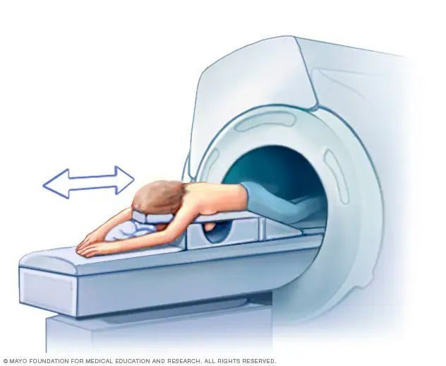

Breast MRI
- What is a breast MRI?
- Breast MRI uses magnetic fields to create an image of the breast
- When do you get a breast MRI?
- Breast MRI is used for breast cancer screening for women at high risk and with dense breasts
Why doesn't everyone get an MRI?
- Requires contrast dye injected into your vein (through an IV) which some people may have allergies to
- More likely than a mammogram to have false positive results
- The machine can feel loud, narrow, or uncomfortable for some people
- May not always be covered by insurance
- Cannot be performed if pregnant or if you have certain types of metal in your body
